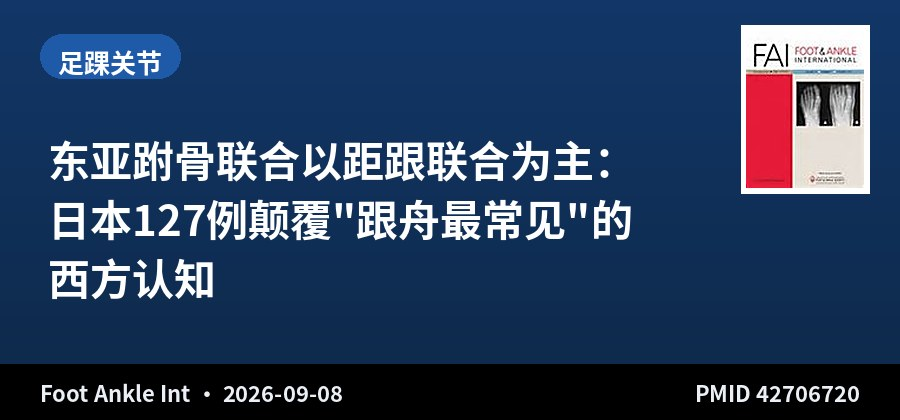
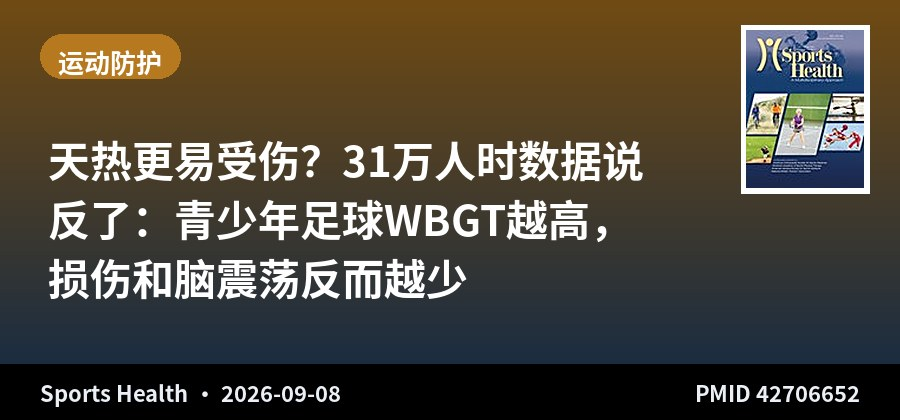

SPORTS MEDICINE & ARTHROSCOPY DIGEST
运动医学 · 关节镜文献速览
第 004 期 · 2026-09-09
昨日（9月8日）10 本核心期刊新收录 2 篇 · 本期精选 2 篇
按关节分类：足踝 1 · 运动防护 1（周二低产日，收录较少）
编者按 EDITOR'S NOTE
今天是低产日，10 本期刊只收录了 2 篇，但这两篇都藏着"反直觉"的信息——一篇颠覆了"跟舟联合最常见"的教科书认知，一篇用 31 万人时的数据证明"天热并不等于更容易受伤"。量少，但值得细读。
跗骨联合那篇来自日本 4 家足踝中心 28 年、127 例：距跟联合占 56.7%，把"跟舟联合最常见"的西方经验直接推翻——在东亚症状性患者里，距跟（尤其后关节面）才是主角，舟楔联合也不少见（22.8%）。这对中国足踝医生的提示很直接：别被欧美教材的"最常见类型"带偏，遇到青少年足痛、后足僵直、X 线阴性的患者，CT 才是定性的金标准。
WBGT 那篇更有意思：温度越高，总损伤、失时损伤、脑震荡反而都更低。研究者推测这更可能是高温下调了训练强度、改变了比赛节奏、球员自我调节，而不是"热保护了身体"。这提醒我们：流行病学里看到的"保护效应"，很多时候是行为混杂、不是生理机制。读到这种反直觉结果，先想"还有什么变量在变"，再谈因果。
▍足踝关节 · 1 篇

多中心回顾 · 127例 · 28年
东亚跗骨联合以距跟联合为主：日本127例颠覆"跟舟最常见"的西方认知
Distribution and Treatment Patterns of Symptomatic Tarsal Coalition in Japan: A Multicenter Retrospective Study
Foot Ankle Int · 2026-09-08 · 日本4家足踝中心 · PMID 42706720
一句话结论：日本 4 家足踝中心 127 例症状性跗骨联合中，距跟联合占 56.7% 居首，舟楔 22.8%、跟舟仅 16.5%；距跟联合中后关节面受累最多（73.6%），与既往西方报道的"中关节面为主"相反。
要点：1997-2025 年 28 年；距跟 56.7% > 舟楔 22.8% > 跟舟 16.5% > 骰舟 3.1% > 楔跖 0.8%；距跟联合中后关节面 73.6%、中+后 22.2%，孤立中关节面与全关节面罕见；双侧受累 18.9%；保守治疗成功 33.1%，手术 66.9%（切除 60.6%、融合 6.3%）。
对临床的启示：别被欧美教材"跟舟联合最常见"带偏——在东亚症状性患者里距跟联合才是主角。对青少年足痛、后足僵直、X 线阴性的患者，CT 是定性金标准；治疗上切除仍是主力，融合极少需要。
▍运动防护 · 1 篇

前瞻队列 · 31万人时
天热更易受伤？31万人时数据说反了：青少年足球WBGT越高，损伤和脑震荡反而越少
The Associations of Wet Bulb Globe Temperature With Match Injury and Concussion Incidence in American Youth Soccer
Sports Health · 2026-09-08 · 威斯康星大学 · PMID 42706652
一句话结论：42 场比赛、315113 人时的前瞻队列显示：WBGT 每升高，总损伤（IRR 0.986）、失时损伤（0.983）、脑震荡（0.981）发生率均显著下降，与"天热更易伤"的直觉相反。
要点：1584 例损伤 + 306 例脑震荡；总损伤 5.0/1000 人时，女生高于男生（5.6 vs 4.4，IRR 1.38）；脑震荡 0.97/1000，女生更高（1.20 vs 0.78，IRR 1.39）；WBGT 与总损伤、失时损伤、脑震荡均负相关，但与无失时损伤无关（P=.86）。
对临床的启示：反直觉结果更值得警惕：WBGT 升高的"保护效应"很可能是行为混杂——高温下调训练强度、改变比赛节奏、球员自我调节，而非温度本身保护身体。读到这种结果，先想"还有什么变量在变"，再谈因果。
关于本栏目：每日定时检索 AJSM、Arthroscopy、Arthroscopy Techniques、KSSTA、Sports Health、OJSM、J ISAKOS、Sports Medicine、Foot & Ankle International、JSES 共 10 本运动医学核心期刊前一日新收录文献，按关节分类，AI 辅助生成中文精要。
声明：本内容由 AI 辅助整理，仅供学术交流参考，观点与数据请以原文为准，不构成诊疗建议。文献题录与摘要来源：PubMed。
— 运动医学 · 关节镜文献速览 · 第 004 期 —